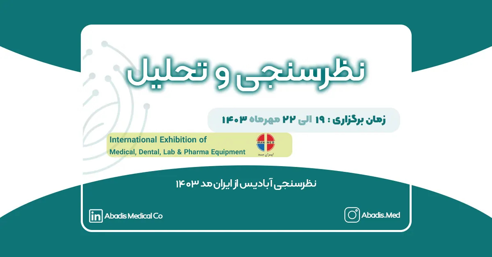

دومین نمایشگاه بینالمللی ایران مد در حوزههای تخصصی تولید و تامین تجهیزات و ملزومات پزشکی، دندانپزشکی، آزمایشگاهی و ملزومات دارویی در تاریخ ۱۹ الی ۲۲ مهر ماه ۱۴۰۳ از ساعت ۱۰ الی ۱۷ در محل نمایشگاه بین المللی شهر آفتاب تهران برگزار میگردد.
به نقل از کمک رسان ایران مد، مزیت اصلی این نمایشگاه بازدیدکنندههای تخصصی و سالنهای بهم پیوسته است.
در افتتاحیه نمایشگاه ایران مد ۲۰۲۴، روز پنج شنبه ۱۹ مهر ۱۴۰۳، جناب آقای دکتر سعیدلو رییس انجمن تولیدکنندگان تجهیزات پزشکی سخنرانی نمودند. به نقل از آیمد ۹۰ ایشان بیان کردند این نمایشگاه فرصتی است که محصولات داخلی و جهانی با یکدیگر مقایسه شود و توان تولیدکنندگان داخلی برای جهان به نمایش گذاشته شود.دکتر سعیدلو در ادامه صحبتهای خود با اشاره به چالشهای اخیر تولیدکنندگان گفت: «قطعی برق در برخی از شهرکهای صنعتی طی تابستان گذشته، خسارات زیادی به تولیدکنندگان وارد کرد.» وی همچنین با ابراز نگرانی نسبت به آینده افزود: «پیشبینی میشود که در زمستان امسال با کمبود گاز مواجه شویم؛ بنابراین باید هرچه زودتر برای این مشکل راهحلی پیدا کنیم تا از آسیبهای احتمالی جلوگیری شود.»
در ادامه مراسم افتتاحیه نائب رییس اتحادیه بازرگانان تجهیزات پزشکی جناب آقای ابوالفتح صانعی اظهار داشتند تامین تجهیزات پزشکی یک مسئله حیاتی است. ایشان در ادامه سخنرانی خویش از کاهش هزینههای درمان با استفاده از فناوریها و تجهیزات پزشکی جدید صحبت نمودند. به نقل
به نقل از درمانا، جناب آقای تقدسینژاد مدیر عامل شرکت شهر آفتاب در افتتاحیه نمایشگاه از حضور پرشور شرکتهای دانش بنیان در نمایشگاه ایران مد ۱۴۰۳ خبر داد. ایشان اعلام نمود؛ تعداد شرکتهای دانش بنیان در این دوره از ۱۶۰ شرکتکننده سال قبل به ۲۵۰ شرکت کننده رسیده است.
به نقل از آيمد ۹۰ جناب آقای مهندس شاهمرادی، مدیرکل اداره تجهیزات پزشکی، در افتتاحیه نمایشگاه ایران مد با اشاره به چالشهای متعدد، نکات مهمی را مطرح کرد. از جمله این نکات اشاره به برگزاری یک نمایشگاه واحد برای سال آینده بود. در ادامه ایشان بیان نمودند، مشکلاتی وجود دارد که ریشه در خارج از وزارت بهداشت دارند، اما تبعات آن بر دوش ما است. یکی از این مشکلات، موضوع تعرفه تجهیزات پزشکی است که برای آن باید شش ماه تمام دنبال سازمان برنامه و بودجه و کمیسیون ماده یک بدویم.
بهعلاوه، در مجلس ناگهان میبینیم که مواد اولیه تولید از دریافت ارز محروم میشوند. این اشتباهات، ما را دچار بحران میکند، در حالی که خطا در جای دیگری رخ داده و آنها باید پاسخگو باشند.
وی همچنین به مشکلات گمرکی اشاره کرد و گفت: کالاها به دلیل یک استاندارد اجباری در گمرک میمانند و هزینههای اضافی تحمیل میشود. چرا تفاهمنامه ما با سازمان استاندارد اجرایی نمیشود؟ این مسائل نیاز به تدبیری جدی دارند.
در گزارش درمانا، جناب آقای دکتر حیدر محمدی، رئیس سازمان غذا و دارو، در مراسم افتتاحیه نمایشگاه ایران مد ۱۴۰۳، با اظهار نظر متفاوتی نسبت به برخی از دیگر مسئولین، بر اهمیت برگزاری متعدد نمایشگاهها تأکید کرد:
برخلاف نظر مهندس شاهمرادی، من شخصاً از تعدد نمایشگاهها لذت میبرم. این نمایشگاهها محلی برای نمایش جدیدترین دستاوردهای تولیدکنندگان داخلی هستند و به نظر من این تنوع و تعدد، ارزشمند است. امروز بسیاری از اقلام پزشکی مورد نیاز کشور در داخل تولید میشوند.
وی با اشاره به رشد تولیدات داخلی در حوزه تجهیزات پزشکی افزود: تعداد ایندکسهای تولیدی در این حوزه طی دو سال گذشته ۴۵ درصد افزایش یافته است.
محمدی همچنین به بدهیهای انباشته مراکز درمانی اشاره کرد: بدهی مراکز درمانی، به جز تجهیزات پزشکی، اکنون به ۳۰ همت رسیده است. پیشنهادی ارائه کردیم که ۱۴.۵ هزار میلیارد تومان به طور مستقیم به حساب شرکتهای تأمینکننده واریز شود که منتظر تصویب این پیشنهاد از سوی هیأت وزیران هستیم.
او درباره توافقات اخیر با بانک مرکزی گفت: «براساس توافق انجامشده، ۲۰۰ میلیون دلار برای بازسازی و نوسازی خطوط تولید دارو و تجهیزات پزشکی به شرکتها اختصاص مییابد که این امر با معرفی وزارت بهداشت صورت خواهد گرفت.
در پایان، محمدی با تاکید بر ثبات تعرفهها اظهار داشت: پیشنهاد دادهایم که تعرفههای واردات برای سال آینده تا زمان ابلاغ نهایی به قوت خود باقی بمانند.
در مراسم اختتامیه نمایشگاه ایران مد در روز یک شنبه ۲۲ مهر ۱۴۰۳ عباس تقدسینژاد، مدیرعامل نمایشگاه شهر آفتاب، با ابراز خرسندی از نتایج به دست آمده، اعلام کرد:
ما تصمیم گرفتیم تا نمایشگاههای متنوعتر و بیشتری را با محوریت مسائل اساسی و چالشهای پیشروی صنایع برگزار کنیم. خوشبختانه، بیش از ۹۰ درصد از حاضران این دوره از نمایشگاه ایران مد نسبت به عملکرد آن اعلام رضایت کردند. نمایشگاه با نظم و انضباط بسیار خوبی برگزار شد.
تقدسینژاد همچنین چشماندازی روشن برای آینده این نمایشگاه ترسیم کرد: امیدواریم ایران مد مانند یک چتر گسترده عمل کند و بتواند در آینده حوزه سلامت را در ابعاد مختلف زیر یک گفتمان مشترک گردهم آورد.
به گزارش درمانا، ابوالفتح صانعی، نایب رئیس کمیسیون اقتصاد سلامت اتاق تهران و عضو هیات مدیره اتحادیه بازرگانان تجهیزات پزشکی ایران، در مراسم اختتامیه نمایشگاه ایران مد ۱۴۰۳، ضمن تقدیر از برگزارکنندگان، بر نکاتی کلیدی تأکید کرد:
این نمایشگاه با پویایی و کیفیت بالایی برگزار شد و از این بابت از همکاران سپاسگزاریم. از مدیرعامل نمایشگاه نیز تقاضا داریم که در سال آینده هزینههای نمایشگاه را افزایش ندهند.
او همچنین با تشکر ویژه از خانم قاسمی به خاطر تلاشهای ارزندهشان افزود: همه از برگزاری نمایشگاه راضی بودند، اما خواهش من این است که اگر انتقادی وجود دارد، حتماً اعلام کنند تا بتوانیم بهتر عمل کنیم.
صانعی در ادامه بر اهمیت حضور مسئولان تأکید کرد و گفت: برای سال آینده باید با برنامهریزی دقیقتر، از افراد مهم دعوت کنیم تا از نمایشگاه بازدید کنند و بتوانیم مشکلات را به طور متمرکز برای آنها تشریح کنیم.
وی در پایان به یکی از مزایای مهم نمایشگاه اشاره کرد: یکی از نکات مثبت این دوره این بود که افراد غیر مرتبط در نمایشگاه حضور نداشتند و این به کیفیت و تمرکز آن کمک کرد.
در ادامه مراسم اختتامیه سرکار خانم مریم قاسمی، دبیر انجمن تولیدکنندگان و صادرکنندگان تجهیزات پزشکی ایران، در مراسم اختتامیه نمایشگاه ایران مد ۱۴۰۳، خبر از صدور مجوز برگزاری این نمایشگاه برای پنج سال آینده در نمایشگاه شهر آفتاب داد.
ایشان پس از این مراسم در گفتوگو با درمانا افزود: ایران مد ۱۴۰۳ به شکل بسیار باشکوهی برگزار شد و امیدواریم که در سال آینده با استقبال بیشتری مواجه شود. هدف ما برای دورههای آینده، تقویت حضور نخبگان و جوانان، ایجاد ارتباط قویتر بین صنعت و دانشگاه، و همچنین توسعه حوزه بینالملل و صادرات در این نمایشگاه است.
شرکت دانش بنیان مخازن طبی آبادیس در دومین نمایشگاه ایران مد حضور نداشت؛ اما همواره در راستای شعار خود یعنی اثرگذاری در تلاش است. به همین جهت یک کار علمی، حرفهای و تخصصی را به کمک شرکت ویراکام برای تحلیل داده به وسیله هوش تجاری و بررسی نمایشگاه های تجهیزات پزشکی در ایران ادامه میدهد.
مرحله اول این پروژه در طول برگزاری ایران هلث ۱۴۰۳ کلید خورد؛ این مرحله نظرسنجی داده محور از غرفه داران و بازدیدکنندگان این نمایشگاه انجام شد. در مراحل بعدی با شرکتکنندگان مصاحبه تلفنی انجام شد.
برای نظرسنجی از نمایشگاه ایران مد ۱۴۰۳ نیز، ابتدا نظرسنجی داده محور شروع شده است؛ و پس از اتمام این مرحله مراحل بعدی انجام خواهد شد.
در نظرسنجی مرحله اول آبادیس از نمایشگاه ایران مد ۵۶ نفر شرکت نمودند.
این خبر در تمامی مراحل به روز رسانی می شود و گزارشهای هر مرحله در این خبر ضمیمه خواهد شد.